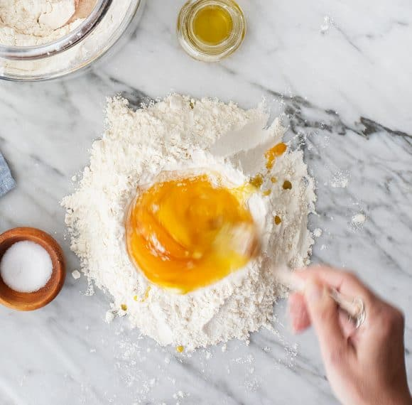

First you are going to want to pour the cup of flour onto a clean work surface with plenty of room. Then you are going to make a well

Then you are going to crack the eggs. Becareful to seperate the yolk from the egg whites. You are then going to pour the egg whites in to the flour well! Next mix the eggs and the flour together to bring it to a shaggy dough.

now it's time to knead the dough, after 8-10 minutes the dough should become smooth. Roll in to a ball. Let the dough rest for 30 minutes!

Once the dough has rested, you will roll out the dough using a pasta machine or a rolling a pin to desired thickness. Warning this is not an easy thing to do and will take a lot of practice!